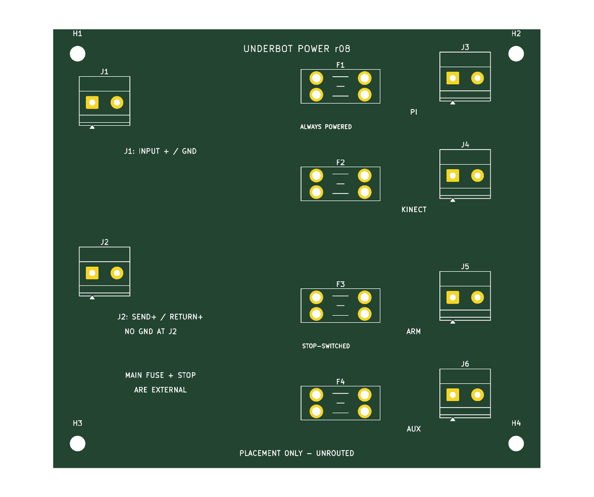

Placement only ? unrouted, not for fabrication. This is the bare-board preview: connector/fuse footprints are positioned, but copper connections and protection ratings are not finalized.
100 ? 90 mm ? 6 power terminals ? 4 MINI fuse holders ? 4 mounting holes
Circuit PDF ? PCB parts candidates ? Design notes and remaining work ? Whole-robot overview

The Pi/Kinect branches remain powered when the external motion contact opens. Arm and auxiliary converter share the switched supply. The T12 battery and drive-stop interface remain separate.
Converter modules are external in this first board. No fuse amperages, copper current rating or DRC pass are claimed.